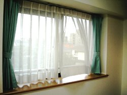
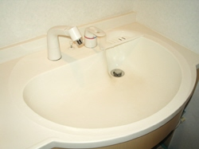
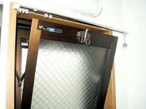
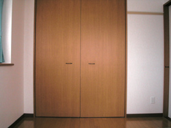
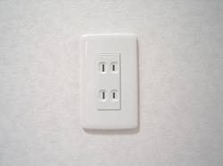
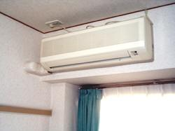

物件選びのポイント
日当たりや風通し
冷暖房費に影響するため、非常に重要です。日当たりが悪いと湿気が多く、カビなどの原因になります。
水まわり
使い勝手の良し悪しを確認します。実際に水を流して、状態を見ます。洗濯機置き場も忘れずに確認しましょう。
セキュリティ
ピッキングなどの犯罪を考慮して、鍵の状態を確認します。また、室内を覗かれることがないよう、窓の位置やサイズもチェックしましょう。管理人が常駐しているかどうかも確認しておくとよいでしょう。
収納
収納量、使い勝手を確認します。幅や高さ、奥行きなども採寸しておくと、何をどこに収納するかを検討する際に役立ちます。
コンセント
実際に使用する家具や家電製品の配置を想定し、コンセントの場所や数を確認します。あらかじめ間取り図に書き込んでおくとよいでしょう。
その他
防音や雨戸の状態、エアコンや給湯器の設置場所、使用するガスの種別（都市ガスかプロパンか）などを確認します。ベランダに洗濯物が干せるかどうかも重要なポイントです。室内の汚れや破損もきちんとチェックしておきましょう。また、物件周辺の状況もしっかり把握しておく必要があります。